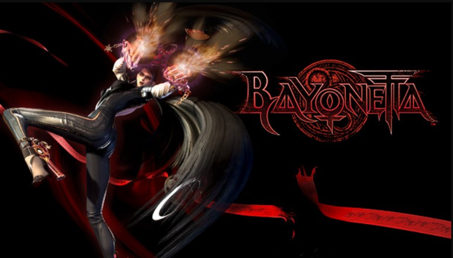

Bayoneta
CLP $14.500
CLP $14.500
Bayonetta. La última superviviente de un antiguo clan de brujas que mantiene el equilibrio entre la luz, la oscuridad y el caos. Bayonetta es descubierta tras 500 años encerrada en una tumba para protegerse a sí misma (y proteger nuestro mundo), lo que desencadenará una serie de acontecimientos con repercusiones catastróficas.
Bayonetta se ve forzada de nuevo a combatir a pesar de no recordar su pasado, lo que la obligará a descubrir la verdad y luchar por su futuro. Su misión la llevará a enfrentarse a incontables y angelicales enemigos y gigantescos rivales en este juego 100 % acción.